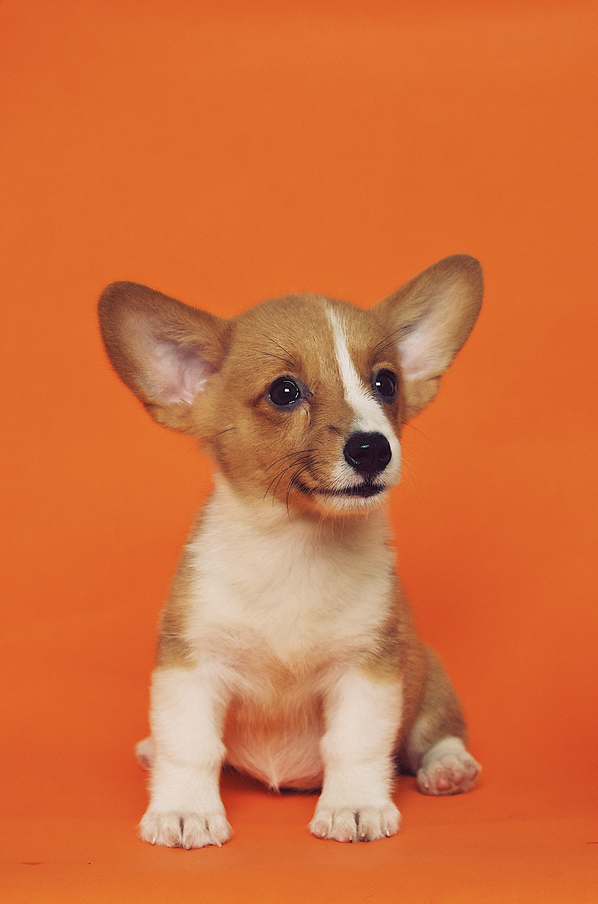

- portrait
- landscape painting
- still life painting
The relatively low cost of the daguerreotype in the middle of the 19th century
and the reduced sitting time for the subject, though still much longer than now,
led to a general rise in the popularity of portrait photography over painted portraiture.
[3]
The style of these early works reflected the technical challenges associated with long
exposure times and the painterly aesthetic of the time.[4] Hidden mother photography,
in which portrait photographs featured young children's mothers hidden in the frame to calm them and keep them still,
arose from this difficulty.[5] Subjects were generally seated against plain backgrounds and lit with the soft light of an overhead window
and whatever else could be reflected with mirrors. Advances in photographic equipment and techniques developed,
and gave photographers the ability to capture images with shorter exposure times and the making of portraits outside the studio.
